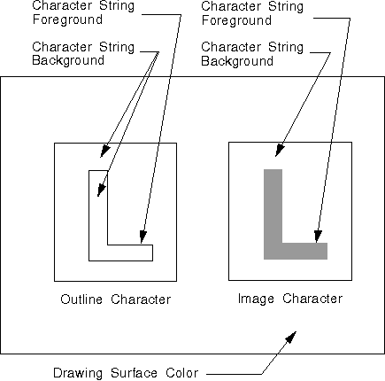

<HTML>
<HEAD>
<META HTTP-EQUIV="CONTENT-TYPE" CONTENT="TEXT/HTML; CHARSET=UTF-8">
<TITLE>Character Color and Mix</TITLE>
</HEAD>
<BODY>
<H1>Character Color and Mix</H1><!-- entering slot 1152 -->
<P>
The<I> color</I> attribute defines the color used to draw a primitive or
an object. The<I> mix</I> attribute determines how the color of a primitive
or an object is combined with the color of the drawing surface or any other
objects on the surface.
<P>
The character-string color defines the color used to draw the output from
any of the draw-character-string functions. When a presentation space is
created, the character-string color default is black. Character strings
are one of the primitives that have both a foreground and a background color,
as shown in the following figure.
<P>
For image characters, colors are determined by setting pels. For outline
characters, the foreground consists of arcs and lines that define the character;
the background color appears between the foreground lines. The character
can be solid or filled, in which cases the background color does not appear
between the foreground lines.
<P>
Character string primitives have a color attribute for both the actual character
and its character cell, which surrounds the character. The character-cell
color is the background color.
<P>
The foreground mix attribute controls the combination of character-string
color and drawing-surface color, while the background mix attribute controls
the combination of the character-cell color and the drawing-surface color,
as illustrated in the following figure.
<P>
<!-- Unable to decode bitmap format -->
<P>
Character String Primitives
<P>

<P>
When a presentation space is created, the character string mix attribute
default is FM_OVERPAINT. The<I> overpaint</I> mix attribute specifies that
the character-string color is not to be modified by the color of the drawing
surface. If the character string mix attribute is changed, the character-string
color is mixed with colors that are already on the drawing surface.
<P>
The character string background color default is CLR_BACKGROUND, usually
defined by the application as the same color as the drawing surface. The
character string background mix attribute default is BM_LEAVEALONE. The
<I>leave-alone</I> background mix attribute specifies that the character
string background color not be drawn. The cell that surrounds the character
string appears only if the background character-string color and mix attributes
are changed.
<P>
Use<A><!-- external link: 1D 20 C4 56 --> GpiSetAttrs</A> to specify a new
color or mix attribute. As input, this function accepts the following:<!-- lm: 0x2 3 -->
<UL>
<P>
<LI><!-- lm: 0x2 6 -->Type of primitive, for example, PRIM_CHAR<!-- lm: 0x2 3 -->
<BR>
<LI><!-- lm: 0x2 6 -->List of attributes to be changed<!-- lm: 0x2 3 -->
<BR>
<LI><!-- lm: 0x2 6 -->List of attributes to be set to their default values
<!-- lm: 0x2 3 -->
<BR>
<LI><!-- lm: 0x2 6 -->Values for the attributes to be changed<!-- lm: 0x2 1 -->
</UL>
<P>
<A><!-- external link: 1D 20 C4 56 -->GpiSetAttrs</A> also is useful to
specify color and mix attributes for a specific data structure -for example,
CHARBUNDLE.<A><!-- external link: 1D 20 C4 56 --> GpiSetAttrs</A> provides
some protection against invalid colors.
<P>
To determine the current character-string color and mix attributes, call
<A><!-- external link: 1D B8 C3 FC -->GpiQueryAttrs</A>, which accepts as
input the primitive type and the attributes in question.<A><!-- external link: 1D B8 C3 51 --> GpiQueryAttrs
</A>returns an array of values for the queried attributes.
<P>
To reset the default character-string color and mix attributes, as with
all attributes specified in CHARBUNDLE, call<A><!-- external link: 1D 35 C4 FC --> GpiSetDefAttrs</A>,
which accepts as input the type of primitive, attributes to be changed,
and values that will become the new default values. Changing default values
is especially important when working with segments. Changing the default
values during a series of drawing functions is not recommended.
<P>
The character color and mix attributes also can be specified using the following
functions:<!-- lm: 0x2 3 -->
<UL>
<P>
<LI><!-- lm: 0x2 6 --><A><!-- external link: 1D 31 C4 FC -->GpiSetColor
</A><!-- lm: 0x2 3 --><!-- lm: 0x2 6 -->
<UL><A><!-- external link: 1D 49 C4 FC -->GpiSetMix
</A><!-- lm: 0x2 3 -->
</UL><!-- lm: 0x2 6 -->
<UL><A><!-- external link: 1D 21 C4 FC -->GpiSetBackColor
</A><!-- lm: 0x2 3 -->
</UL><!-- lm: 0x2 6 -->
<UL><A><!-- external link: 1D 22 C4 FC -->GpiSetBackMix
</A><!-- lm: 0x2 1 -->
</UL>
<P>
If the character color, character background color, mix, or background mix
attributes are specified individually, the following queries can return
a value inconsistent with the current character attributes:<!-- lm: 0x2 3 -->
<UL>
<P>
<LI><!-- lm: 0x2 6 --><A><!-- external link: 1D CD C3 FC -->GpiQueryColor
</A><!-- lm: 0x2 3 --><!-- lm: 0x2 6 -->
<UL><A><!-- external link: 1D F5 C3 FC -->GpiQueryMix
</A><!-- lm: 0x2 3 -->
</UL><!-- lm: 0x2 6 -->
<UL><A><!-- external link: 1D B9 C3 FC -->GpiQueryBackColor
</A><!-- lm: 0x2 3 -->
</UL><!-- lm: 0x2 6 -->
<UL><A><!-- external link: 1D BA C3 FC -->GpiQueryBackMix
</A><!-- lm: 0x2 1 -->
</UL>

<P><HR>

<A HREF="1130_L4_CharacterExtraandBre.html">[Back: Character Extra and Break Extra]</A> <BR>
<A HREF="1132_L2_UsingCharacterString.html">[Next: Using Character String Primitives]</A> 
</BODY>
</HTML>
